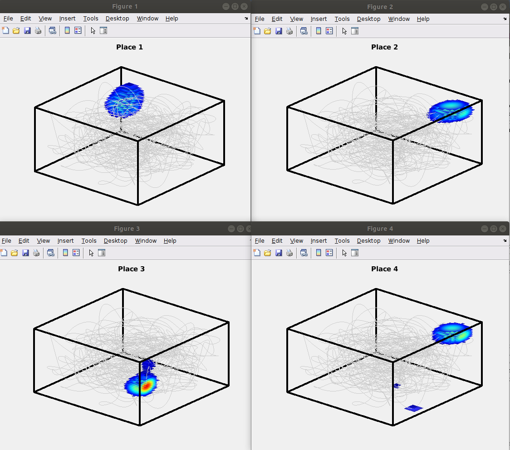
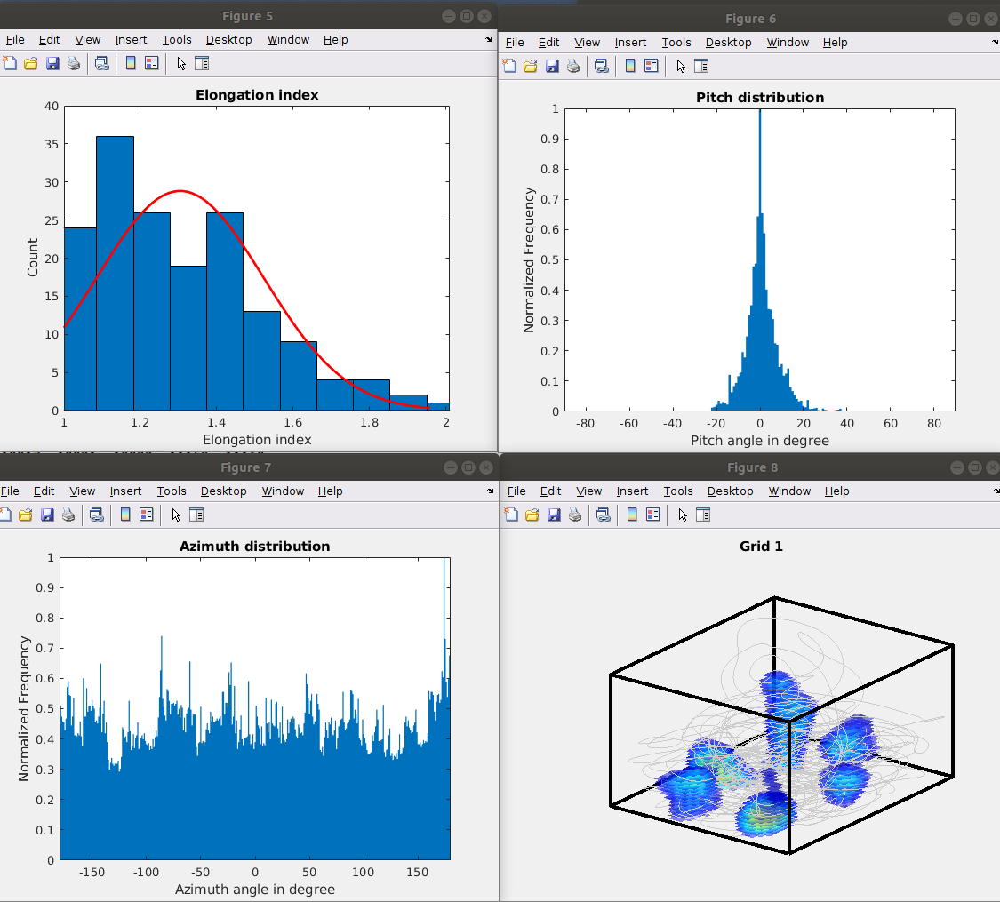
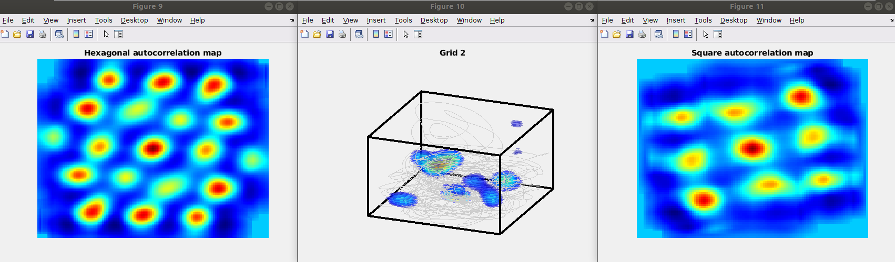

This is the readme for the MATLAB models associated with the paper:
Karthik Soman, Srinivasa Chakravarthy, Michael M Yartsev, "A hierarchical anti-Hebbian network model for the formation of spatial cells in three-dimensional space", Nature Communications (2018) 9:4046 DOI: 10.1038/s41467-018-06441-5
This model was contributed by Karthik Soman.
This model shows how spatial representations in 3D space could emerge using unsupervised neural networks. Model is a hierarchical one which means that it has multiple layers, where each layer has a specific function to achieve. This architecture is more of a generalised one i.e. it gives rise to different kinds of spatial representations after training.
Usage:After extracting this archive cd to the new folder and type "main_code" at the matlab command prompt. After a minute or two, 28 figures should appear including these:
  